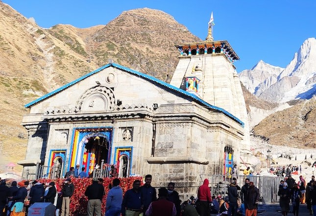
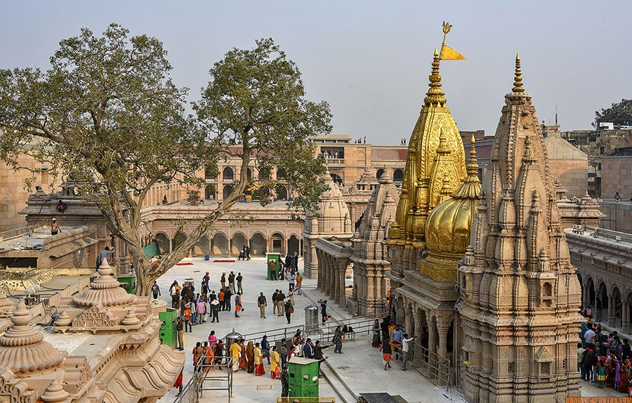
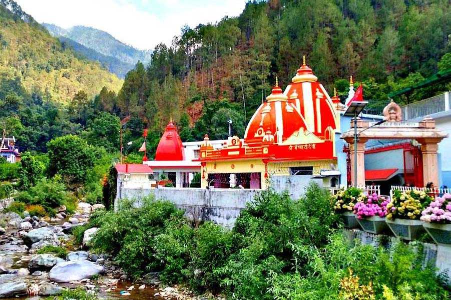

1st Jan, 2023
Kedarnath Temple
Kedarnath Temple, nestled amidst the majestic Himalayas in Uttarakhand, is a revered
Hindu pilgrimage site and a testimony to the rich spiritual heritage of India. This sacred abode of
Lord Shiva holds immense significance and attracts devotees from all over the world.
Perched at an altitude of 3,583 meters, the temple is surrounded by awe-inspiring
natural beauty,
with snow-capped peaks and pristine landscapes forming a breathtaking backdrop. The journey to
Kedarnath Temple is a test of devotion, as pilgrims trek through rugged terrains and traverse
picturesque valleys to reach this sacred sanctuary.
Kedarnath Temple carries deep mythological and historical significance. According to
legends, it is believed to have been established by the Pandavas from the Hindu epic Mahabharata as
a tribute to Lord Shiva. The temple withstood the test of time, surviving natural calamities and
embodying the resilience and faith of the devotees who hold it dear.
Beyond its religious importance, Kedarnath Temple showcases the harmonious blend of
spirituality and natural wonders. The picturesque surroundings offer a serene environment for
introspection and connection with the divine. The breathtaking views of the Himalayas serve as a
reminder of the awe-inspiring power of nature.

1st Dec, 2022
Kashi Vishwanath Temple
Kashi Vishwanath Temple, located in the holy city of Varanasi in Uttar Pradesh, is one
of the most revered and ancient temples in India. Dedicated to Lord Shiva, it holds immense
spiritual significance and is a cherished pilgrimage destination for devotees from around the world.
Situated on the banks of the sacred river Ganges, the temple has stood as a symbol of
devotion and
faith for centuries. Its golden spire, beautifully adorned with intricate carvings and sculptures,
glistens in the sunlight, attracting the attention and reverence of all who visit.
Inside the temple complex, the atmosphere is charged with devotion and spirituality.
Devotees gather
to offer prayers, perform rituals, and seek blessings from Lord Shiva, the presiding deity. The
divine aura and the rhythmic chants of ancient Vedic hymns create an ambiance of serenity and deep
spiritual awakening.
Kashi Vishwanath Temple holds great historical and mythological significance. It is
believed to be
one of the twelve Jyotirlingas (divine manifestations of Lord Shiva) and is considered one of the
holiest sites for Hindus. The temple's rich history dates back to several millennia, and its origins
are rooted in Hindu mythology and legends.
Beyond its religious importance, the temple reflects the architectural grandeur and
artistic finesse of ancient India. The intricate detailing, the towering walls, and the vibrant
colors of the temple's inner sanctum leave visitors in awe of the craftsmanship of bygone eras.

1st Jun, 2022
Baba Neem Karoli Temple
Baba Neem Karoli Temple, situated in the serene town of Kainchi Dham in Uttarakhand,
holds a special place in the hearts of devotees seeking spiritual solace and guidance. This temple
is dedicated to the revered saint Neem Karoli Baba, also known as Maharaj-ji, who is renowned for
his simplicity, unconditional love, and profound wisdom.
The temple complex is nestled amidst lush green hills, creating an atmosphere of
tranquility and
serenity. The main temple structure, adorned with colorful flags and sacred symbols, exudes a sense
of divinity and spiritual energy.
Devotees from various walks of life come to pay their respects to Neem Karoli Baba,
seeking
blessings, spiritual guidance, and inner transformation. It is believed that the saint's divine
presence continues to reside in the temple, showering devotees with love, compassion, and miracles.
The teachings and anecdotes associated with Neem Karoli Baba are widely revered. His
message of
unconditional love, acceptance, and service to others resonates deeply with seekers on the spiritual
path. The temple serves as a sanctuary for those seeking solace, inspiration, and a deeper
connection with the divine.
Visiting Baba Neem Karoli Temple is not merely a religious pilgrimage but an opportunity
to immerse oneself in the teachings and spirit of a realized master. It is a place where devotees
can experience a profound sense of peace, surrender, and devotion.
Beyond the temple, the surrounding natural beauty of Kainchi Dham adds to the sacred ambiance. The
gentle breeze, melodious birdsong, and the tranquil atmosphere create a conducive environment for
introspection, meditation, and self-reflection.
A visit to Baba Neem Karoli Temple offers an opportunity to connect with the legacy of a revered
saint, soak in the vibrations of devotion, and experience the transformative power of love and
spirituality. It is a place where devotees can find solace, receive guidance, and embark on a
journey of self-discovery, inspired by the teachings of Neem Karoli Baba.